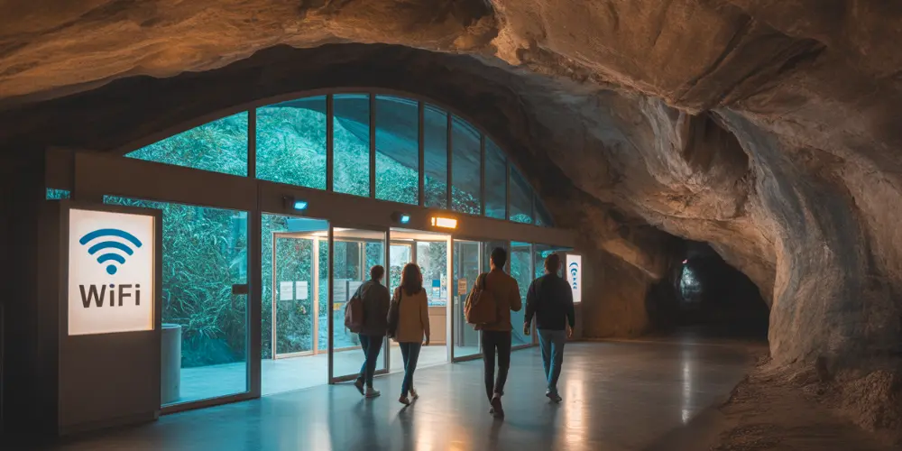

Nubart Team
IT Development
Offline Mode for Museum Audio Guides: When You Need It, When You Don't, and How to Get It Right
A visitor scans the QR code, selects their language, presses play — and nothing happens. The screen spins. The audio won't load. Few things damage a venue's digital credibility faster than an audio guide that fails in the first minute. But the solution isn't as simple as "just make it work offline." Applied incorrectly, offline mode can make the visitor experience even worse.

The connectivity problem nobody talks about
If you run a museum, a castle, a cave, or an archaeological site, you already know: mobile connectivity inside your venue is unreliable. Thick stone walls, underground chambers, remote rural locations — all of these can turn a perfectly good digital audio guide into a buffering nightmare.
The obvious reaction is to make the audio guide work offline. But "offline" is not a single feature. It's a spectrum of approaches, and choosing the wrong one can backfire badly. A venue that enables full offline preloading without providing free WiFi at the entrance, for example, is forcing every visitor — including international tourists on expensive roaming plans — to download the entire audio guide over their mobile data. That's not a solution. That's a problem disguised as a feature.
So how do you decide what's right for your venue? Let's break it down.
What are the different ways to deliver an audio guide offline?
Digital audio guides typically handle content delivery in one of three ways: streaming, partial offline, and total offline. Each has clear advantages — and clear limitations.
Streaming (the default, and often the best option)
In a streaming setup, audio tracks are loaded on demand: the visitor presses play, and the track is fetched from the server in real time. No waiting, no bulk download, no wasted data.
This is the right default for most venues, especially those without free public WiFi. Why? Because the visitor only consumes mobile data for the tracks they actually listen to. A visitor who listens to 5 out of 20 tracks downloads only those 5. In contrast, a full offline preload would force that same visitor to download all 20 tracks upfront — wasting data and time on content they'll never use.
Streaming works best when: the venue has reasonable mobile connectivity throughout, or the venue has no public WiFi to offer (making preloading impractical anyway).
Total offline (when the venue can support it)
A total offline setup preloads everything the visitor needs — audio tracks, images, texts, interactive maps, even the application code itself — immediately after the visitor selects a language. Once the preload is complete, the audio guide works with zero connectivity. The visitor can close the browser, switch to airplane mode, even turn off their phone. When they reopen the guide later — by simply scanning the QR code again — everything is still there.
This is powerful, but it requires one essential condition: the venue must provide free WiFi at the point where visitors start the audio guide — typically the entrance, reception, or ticketing area.
Without WiFi, total offline is counterproductive. You'd be asking every visitor to consume their own data allowance for a bulk download upfront — including visitors who would have been perfectly fine streaming a few tracks on demand. International visitors on expensive roaming quotas are hit hardest.
Total offline works best when:
- The venue offers free WiFi at the entrance but has poor or no connectivity in the visit areas (underground galleries, caves, thick-walled historic buildings).
- The venue has WiFi throughout but only in certain areas, and wants to offer visitors a courtesy: "Scan and download here, then enjoy the guide without using your own data."
- The venue receives many international visitors from regions subject to high roaming charges, and can provide WiFi for the initial download.
Partial offline (the precision approach)
Partial offline is the most sophisticated option — and the least common in the industry. Instead of preloading everything or nothing, it preloads only the specific tracks that correspond to points of interest located in areas with poor connectivity.
How does this work in practice? During the setup phase, a staff member walks through the venue with the audio guide active, visiting every point of interest. This generates a connectivity profile — a diagnostic map of signal strength across the venue. The map reveals exactly where coverage drops or dies. The production team then configures only those specific tracks for preloading, leaving the rest to stream normally.
The result: a much faster preload (since only a handful of tracks need to be downloaded), combined with guaranteed playback in dead spots. And if the venue's connectivity situation changes — a new router is installed, or construction temporarily blocks signal — the configuration can be fine-tuned without rebuilding the guide.
Partial offline works best when: the venue has generally acceptable connectivity with a few known dead spots (a basement gallery, an outdoor section with no coverage, a specific wing with thick walls).
Which offline mode is right for your venue?
Not sure which approach fits? This decision matrix covers the most common scenarios:
| Connectivity profile | Recommended approach | Why |
|---|---|---|
| Good mobile signal throughout the venue | Streaming | No preload needed; visitors use data only for what they play |
| No public WiFi, variable mobile signal | Streaming | Preloading without WiFi wastes visitors' mobile data |
| Free WiFi at entrance, poor or no signal inside | Total offline | Visitors download once on WiFi, then explore signal-free |
| Free WiFi at entrance, mostly good signal with a few dead spots | Partial offline | Fast preload of only the problem areas; everything else streams |
| No WiFi and no mobile signal anywhere | Improve infrastructure first | No audio guide approach — digital or otherwise — can solve a complete absence of connectivity |
How can you tell if an offline solution is reliable?
If you're evaluating digital audio guide providers and offline capability matters for your venue, there's an important technical distinction worth understanding.
Persistent offline storage vs. temporary browser cache
Most web-based (PWA) audio guide providers that offer some form of offline mode rely on standard browser caching. This means content is stored in a temporary cache that the browser manages on its own. The problem: browsers routinely clear this cache under storage pressure, and the cached content often doesn't survive when the visitor closes the browser. It's unreliable.
A more robust approach uses persistent offline storage — technologies known as service workers and IndexedDB — where the audio guide provider programmatically controls what gets stored and when. The content isn't subject to the browser's automatic cleanup. It persists even after the browser is closed, and can be accessed again by simply reopening the audio guide URL. Persistent storage still depends on available space on the visitor's device, of course — but unlike cache, it won't be arbitrarily wiped mid-visit.
The practical difference? With browser-cache-based offline, a visitor who closes their browser to take a phone call might return to find their audio guide has vanished. With persistent storage, the guide is still there — ready to resume, no new download needed.
When evaluating providers, ask this simple question: "If a visitor closes the browser and reopens the guide an hour later, will the offline content still be available?" The answer tells you everything about the underlying technology.
What about native apps?
Native audio guide apps handle offline through downloadable content packages. The best implementations let visitors download content for a single language. The worst force a download of all languages at once — a significant and unnecessary data cost. On top of this, native apps carry ongoing maintenance overhead: store approvals, OS compatibility updates, and separate builds for iOS and Android — costs that add up quickly and don't directly improve the visitor experience.
However, even the best native apps rarely offer anything like partial offline. It's typically all-or-nothing: download the full package or stream everything. The granular, per-track control that a well-implemented PWA can offer is uncommon in the app world.
And of course, native apps carry a much larger barrier to entry: every extra step before playback reduces usage, and requiring an app download is usually the biggest step of all. Research shows that fewer than 3% of museum visitors are willing to download a dedicated audio guide app. The remaining 97% simply skip the guide entirely. This is ultimately why a well-implemented PWA with reliable offline capability offers a fundamentally better return on investment than any native app — it removes the download barrier while still solving the connectivity problem.
What about video?
While audio, images, and maps are well suited for persistent offline storage, video remains a streaming-first medium due to file size constraints. Even in a full offline setup, video content will need an active connection. If your audio guide relies heavily on video, factor this into your connectivity planning — you'll need at least some signal strength in areas where video content is featured.
How do you implement offline mode correctly?
If you've determined that your venue needs a total or partial offline setup, here are a few best practices to ensure a smooth visitor experience.
Communicate at the entrance. If visitors need to wait for a preload, tell them. A sign near the QR code scanning point ("Please wait for the download to complete before starting your visit") goes a long way. Staff should understand the process too, so they can help visitors who seem confused.
Optimize your audio files. Reduce the bitrate of audio tracks for offline-enabled guides. To give a concrete benchmark: a 13-track audio guide averaging one minute per track, including an interactive map, can weigh as little as 9 megabytes. That's under 10 seconds on decent WiFi — or about a minute on a slow mobile connection. Lighter files mean faster preloads and happier visitors.
Show the preload progress. Visitors should see exactly what's happening during the download: a progress counter ("5 / 12 tracks loaded"), the name of each track being downloaded, and a clear message explaining that the guide will work without internet once the preload is complete. Transparency reduces anxiety and prevents visitors from navigating away mid-download.
Ensure reliable WiFi at the download point. This sounds obvious, but it's the single most common mistake: enabling offline mode without confirming that the WiFi at the entrance is strong and publicly accessible enough. Test it. Test it with 20 simultaneous connections. Test it on a busy Saturday.
Let visitors reclaim storage when they're done. After the visit, the preloaded audio guide content remains stored in the visitor's browser. Visitors who want to free up space can do so by clearing stored site data in their browser settings — the same process they'd use for any website. It's worth mentioning this on a post-visit screen or confirmation message, so visitors feel in control.
Choose the right mode for your situation. When in doubt, refer back to the decision matrix above. The most important rule: never apply total offline preloading unless your venue offers free WiFi at the scanning point. Without it, you're creating the very friction you're trying to eliminate.
The bottom line
Offline mode for a digital audio guide is not a checkbox feature. It's a strategic decision that should be based on your venue's specific connectivity profile, the availability of public WiFi, and the profile of your visitors — particularly international ones on roaming.
Applied correctly, offline mode guarantees a seamless experience in even the most challenging environments — underground passages, thick medieval walls, remote ruins with no cell tower in sight. Applied incorrectly, it creates exactly the kind of friction it was supposed to eliminate.
The best audio guide providers will help you diagnose your venue's connectivity, recommend the right approach, and configure it with precision — not just flip a switch and hope for the best.